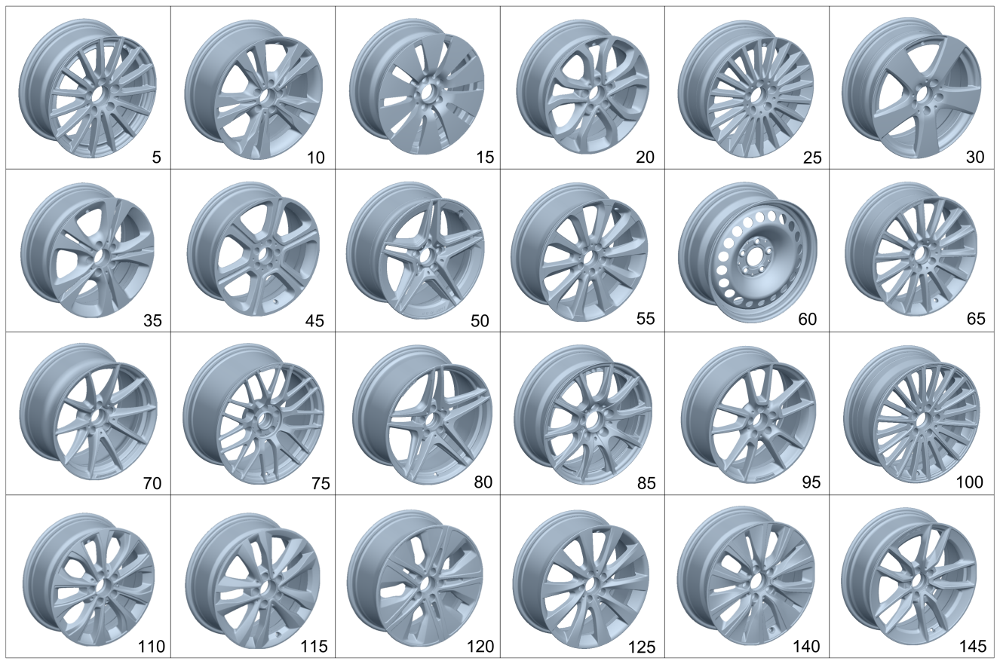

| № | Артикул | Название | Кол. | Примечание | Ограничение |
|---|---|---|---|---|---|
| 5 | A 205 401 26 02 | Дисковое колесо | 2 | 15\-спицевый колесный диск, передний мост; 7J X 16 H2 ET 48 [002869] СОБЛЮДАТЬ РУКОВОДСТВО ПО ВЫПОЛНЕНИЮ РАБОТ В WIS-NET#GF40.10-P-0804B# | 68R |
| 5 | A 205 401 26 02 | Дисковое колесо | 2 | 15\-спицевый колесный диск, задний мост; 7J X 16 H2 ET 48 [002869] СОБЛЮДАТЬ РУКОВОДСТВО ПО ВЫПОЛНЕНИЮ РАБОТ В WIS-NET#GF40.10-P-0804B# | 68R |
| 10 | A 205 401 28 02 | Дисковое колесо | 2 | Колесо с 5 сдвоенными спицами, передний мост; 7,5J X 18 H2 ET 44 [002869] СОБЛЮДАТЬ РУКОВОДСТВО ПО ВЫПОЛНЕНИЮ РАБОТ В WIS-NET#GF40.10-P-0804B# | 22R |
| 10 | A 205 401 29 02 | Дисковое колесо | 2 | Колесо с 5 сдвоенными спицами, задний мост; 8,5J X 18 H2 ET 56 [002869] СОБЛЮДАТЬ РУКОВОДСТВО ПО ВЫПОЛНЕНИЮ РАБОТ В WIS-NET#GF40.10-P-0804B# | 22R |
| 10 | A 205 401 28 02 | Дисковое колесо | 2 | Колесо с 5 сдвоенными спицами, передний мост; 7,5J X 18 H2 ET 44 [002869] СОБЛЮДАТЬ РУКОВОДСТВО ПО ВЫПОЛНЕНИЮ РАБОТ В WIS-NET#GF40.10-P-0804B# | 22R+645 |
| 10 | A 205 401 27 00 | Дисковое колесо | 2 | Колесо с 5 сдвоенными спицами, передний мост; 7,5J X19 H2 44 [002869] СОБЛЮДАТЬ РУКОВОДСТВО ПО ВЫПОЛНЕНИЮ РАБОТ В WIS-NET#GF40.10-P-0804B# | R17 |
| 10 | A 205 401 28 00 | Дисковое колесо | 2 | Колесо с 5 сдвоенными спицами, передний мост; 8,5J X 19 H2 ET 56 [002869] СОБЛЮДАТЬ РУКОВОДСТВО ПО ВЫПОЛНЕНИЮ РАБОТ В WIS-NET#GF40.10-P-0804B# | R17 |
| 10 | A 205 401 67 00 | Дисковое колесо | 2 | Колесо с 5 сдвоенными спицами, передний мост; 7,5J X 19 H2 ET 44 [002869] СОБЛЮДАТЬ РУКОВОДСТВО ПО ВЫПОЛНЕНИЮ РАБОТ В WIS-NET#GF40.10-P-0804B# | R90 |
| 10 | A 205 401 68 00 | Дисковое колесо | 2 | Колесо с 5 сдвоенными спицами, задний мост; 8,5J X 19 H2 ET 56 [002869] СОБЛЮДАТЬ РУКОВОДСТВО ПО ВЫПОЛНЕНИЮ РАБОТ В WIS-NET#GF40.10-P-0804B# | R90 |
| 10 | A 205 401 28 02 | Дисковое колесо | 4 | Колесный диск с 5 сдвоенными спицами, передний и задний мост; 7,5J X 18 H2 ET 44 [002869] СОБЛЮДАТЬ РУКОВОДСТВО ПО ВЫПОЛНЕНИЮ РАБОТ В WIS-NET#GF40.10-P-0804B# | 4R7 |
| 10 | A 205 401 28 02 | Дисковое колесо | 2 | Колесо с 5 сдвоенными спицами, передний мост; 7,5J X 18 H2 ET 44 [002869] СОБЛЮДАТЬ РУКОВОДСТВО ПО ВЫПОЛНЕНИЮ РАБОТ В WIS-NET#GF40.10-P-0804B# | 2R4 |
| 10 | A 205 401 29 02 | Дисковое колесо | 2 | Колесо с 5 сдвоенными спицами, задний мост; 8,5J X 18 H2 ET 56 [002869] СОБЛЮДАТЬ РУКОВОДСТВО ПО ВЫПОЛНЕНИЮ РАБОТ В WIS-NET#GF40.10-P-0804B# | 2R4 |
| 15 | A 205 401 01 00 | Дисковое колесо | 2 | 10\-спицевое колесо переднего моста; 6,5J X 16 H2 ET 38 [002869] СОБЛЮДАТЬ РУКОВОДСТВО ПО ВЫПОЛНЕНИЮ РАБОТ В WIS-NET#GF40.10-P-0804B# | 39R |
| 15 | A 205 401 01 00 | Дисковое колесо | 2 | 10\-спицевое колесо заднего моста; 6,5J X 16 H2 ET 38 [002869] СОБЛЮДАТЬ РУКОВОДСТВО ПО ВЫПОЛНЕНИЮ РАБОТ В WIS-NET#GF40.10-P-0804B# | 39R |
| 15 | A 205 401 21 00 | Дисковое колесо | 2 | 10\-спицевое колесо переднего моста; 7J X 17 H2 ET 48.5 [002869] СОБЛЮДАТЬ РУКОВОДСТВО ПО ВЫПОЛНЕНИЮ РАБОТ В WIS-NET#GF40.10-P-0804B# | 25R/R35 |
| 15 | A 205 401 21 00 | Дисковое колесо | 2 | 10\-спицевое колесо заднего моста; 7J X 17 H2 ET 48.5 [002869] СОБЛЮДАТЬ РУКОВОДСТВО ПО ВЫПОЛНЕНИЮ РАБОТ В WIS-NET#GF40.10-P-0804B# | 25R |
| 15 | A 205 401 38 00 | Дисковое колесо | 2 | 10\-спицевое колесо заднего моста; 8J X 17 H2 ET 54 [002869] СОБЛЮДАТЬ РУКОВОДСТВО ПО ВЫПОЛНЕНИЮ РАБОТ В WIS-NET#GF40.10-P-0804B# | R35 |
| 20 | A 205 401 02 00 | Дисковое колесо | 2 | Колесо с 5 сдвоенными спицами, передний мост; 7J X 17 H2 ET 48,5 [002869] СОБЛЮДАТЬ РУКОВОДСТВО ПО ВЫПОЛНЕНИЮ РАБОТ В WIS-NET#GF40.10-P-0804B# | R48/R52/R81/80R |
| 20 | A 205 401 02 00 | Дисковое колесо | 2 | Колесо с 5 сдвоенными спицами, задний мост; 7J X 17 H2 ET 48,5 [002869] СОБЛЮДАТЬ РУКОВОДСТВО ПО ВЫПОЛНЕНИЮ РАБОТ В WIS-NET#GF40.10-P-0804B# | R48/80R |
| 20 | A 205 401 39 00 | Дисковое колесо | 2 | Колесо с 5 сдвоенными спицами, задний мост; 8J X 17 H2 ET 54 [002869] СОБЛЮДАТЬ РУКОВОДСТВО ПО ВЫПОЛНЕНИЮ РАБОТ В WIS-NET#GF40.10-P-0804B# | R52 |
| 20 | A 205 401 39 00 | Дисковое колесо | 2 | Колесо с 5 сдвоенными спицами, задний мост; 8J X 17 H2 ET 54 [002869] СОБЛЮДАТЬ РУКОВОДСТВО ПО ВЫПОЛНЕНИЮ РАБОТ В WIS-NET#GF40.10-P-0804B# | R81 |
| 20 | A 205 401 02 00 | Дисковое колесо | 2 | Колесо с 5 сдвоенными спицами, передний мост; 7J X 17 H2 ET 48,5 [002869] СОБЛЮДАТЬ РУКОВОДСТВО ПО ВЫПОЛНЕНИЮ РАБОТ В WIS-NET#GF40.10-P-0804B# | R04 |
| 20 | A 205 401 02 00 | Дисковое колесо | 2 | Колесо с 5 сдвоенными спицами, задний мост; 7J X 17 H2 ET 48,5 [002869] СОБЛЮДАТЬ РУКОВОДСТВО ПО ВЫПОЛНЕНИЮ РАБОТ В WIS-NET#GF40.10-P-0804B# | R04 |
| 25 | A 205 401 56 00 | Дисковое колесо | 2 | Многоспицевый колесный диск, передний мост; 7J X 17 H2 ET 48,5 [002869] СОБЛЮДАТЬ РУКОВОДСТВО ПО ВЫПОЛНЕНИЮ РАБОТ В WIS-NET#GF40.10-P-0804B# | 08R/56R |
| 25 | A 205 401 56 00 | Дисковое колесо | 2 | Многоспицевый колесный диск, задний мост; 7J X 17 H2 ET 48,5 [002869] СОБЛЮДАТЬ РУКОВОДСТВО ПО ВЫПОЛНЕНИЮ РАБОТ В WIS-NET#GF40.10-P-0804B# | 08R |
| 25 | A 205 401 40 00 | Дисковое колесо | 2 | Многоспицевый колесный диск, задний мост; 8J X 17 H2 ET 54 [002869] СОБЛЮДАТЬ РУКОВОДСТВО ПО ВЫПОЛНЕНИЮ РАБОТ В WIS-NET#GF40.10-P-0804B# | 56R |
| 25 | A 205 401 56 00 | Дисковое колесо | 2 | Многоспицевый колесный диск, передний мост; 7J X 17 H2 ET 48,5 [002869] СОБЛЮДАТЬ РУКОВОДСТВО ПО ВЫПОЛНЕНИЮ РАБОТ В WIS-NET#GF40.10-P-0804B# | 08R+775L |
| 25 | A 205 401 56 00 | Дисковое колесо | 2 | Многоспицевый колесный диск, задний мост; 7J X 17 H2 ET 48,5 [002869] СОБЛЮДАТЬ РУКОВОДСТВО ПО ВЫПОЛНЕНИЮ РАБОТ В WIS-NET#GF40.10-P-0804B# | 08R+775L |
| 30 | A 205 401 55 00 | Дисковое колесо | 2 | 5\-спицевое колесо, передний мост; 7J X 17 H2 ET 48,5 [002869] СОБЛЮДАТЬ РУКОВОДСТВО ПО ВЫПОЛНЕНИЮ РАБОТ В WIS-NET#GF40.10-P-0804B# | R24 |
| 30 | A 205 401 55 00 | Дисковое колесо | 2 | 5\-спицевое колесо заднего моста; 7J X 17 H2 ET 48,5 [002869] СОБЛЮДАТЬ РУКОВОДСТВО ПО ВЫПОЛНЕНИЮ РАБОТ В WIS-NET#GF40.10-P-0804B# | R24 |
| 30 | A 205 401 88 00 | Дисковое колесо | 2 | 5\-спицевое колесо, передний мост; 7,5J X 18 H2 ET 44 [002869] СОБЛЮДАТЬ РУКОВОДСТВО ПО ВЫПОЛНЕНИЮ РАБОТ В WIS-NET#GF40.10-P-0804B# | R32 |
| 30 | A 205 401 88 00 | Дисковое колесо | 2 | 5\-спицевое колесо заднего моста; 7,5J X 18 H2 ET 44 [002869] СОБЛЮДАТЬ РУКОВОДСТВО ПО ВЫПОЛНЕНИЮ РАБОТ В WIS-NET#GF40.10-P-0804B# | R32+645 |
| 30 | A 205 401 89 00 | Дисковое колесо | 2 | 5\-спицевое колесо заднего моста; 8,5J X 18 H2 ET 56 [002869] СОБЛЮДАТЬ РУКОВОДСТВО ПО ВЫПОЛНЕНИЮ РАБОТ В WIS-NET#GF40.10-P-0804B# | R32 |
| 30 | A 205 401 55 00 | Дисковое колесо | 2 | 5\-спицевое колесо, передний мост; 7J X 17 H2 ET 48,5 [002869] СОБЛЮДАТЬ РУКОВОДСТВО ПО ВЫПОЛНЕНИЮ РАБОТ В WIS-NET#GF40.10-P-0804B# | R24+775L |
| 30 | A 205 401 55 00 | Дисковое колесо | 2 | 5\-спицевое колесо заднего моста; 7J X 17 H2 ET 48,5 [002869] СОБЛЮДАТЬ РУКОВОДСТВО ПО ВЫПОЛНЕНИЮ РАБОТ В WIS-NET#GF40.10-P-0804B# | R24+775L |
| 30 | A 205 401 88 00 | Дисковое колесо | 4 | 5\-спицевый колесный диск, передний и задний мост; 7,5J X 18 H2 ET 44 [002869] СОБЛЮДАТЬ РУКОВОДСТВО ПО ВЫПОЛНЕНИЮ РАБОТ В WIS-NET#GF40.10-P-0804B# | 2R8 |
| 30 | A 205 401 55 00 | Дисковое колесо | 4 | 5\-спицевый колесный диск, передний и задний мост; 7J X 17 H2 ET 48,5 [002869] СОБЛЮДАТЬ РУКОВОДСТВО ПО ВЫПОЛНЕНИЮ РАБОТ В WIS-NET#GF40.10-P-0804B# | 1R5 |
| 35 | A 205 401 43 00 | Дисковое колесо | 2 | 5\-спицевое колесо, передний мост; 7J X 17 H2 ET 48,5 [002869] СОБЛЮДАТЬ РУКОВОДСТВО ПО ВЫПОЛНЕНИЮ РАБОТ В WIS-NET#GF40.10-P-0804B# | R11 |
| 35 | A 205 401 43 00 | Дисковое колесо | 2 | 5\-спицевое колесо заднего моста; 7J X 17 H2 ET 48,5 [002869] СОБЛЮДАТЬ РУКОВОДСТВО ПО ВЫПОЛНЕНИЮ РАБОТ В WIS-NET#GF40.10-P-0804B# | R11 |
| 35 | A 205 401 43 00 | Дисковое колесо | 4 | 5\-спицевый колесный диск, передний и задний мост; 7J X 17 H2 ET 48,5 [002869] СОБЛЮДАТЬ РУКОВОДСТВО ПО ВЫПОЛНЕНИЮ РАБОТ В WIS-NET#GF40.10-P-0804B# | 4R9 |
| 45 | A 205 401 30 02 | Дисковое колесо | 2 | 5\-спицевое колесо, передний мост; 7,5J X 19 H2 ET 44 [002869] СОБЛЮДАТЬ РУКОВОДСТВО ПО ВЫПОЛНЕНИЮ РАБОТ В WIS-NET#GF40.10-P-0804B# | 45R |
| 45 | A 205 401 31 02 | Дисковое колесо | 2 | 5\-спицевое колесо заднего моста; 8,5J X 19 H2 ET 56 [002869] СОБЛЮДАТЬ РУКОВОДСТВО ПО ВЫПОЛНЕНИЮ РАБОТ В WIS-NET#GF40.10-P-0804B# | 45R |
| 50 | A 205 401 06 01 | Колесо со спицами | 2 | Колесо с 5 сдвоенными спицами, задний мост; 9,5J X 19 H2 ET 56 [-] Ознакомиться с инструкцией по выполнению работ в WIS-NET#GF40.10-P-0804B# | 9R1 |
| 50 | A 205 401 96 00 | Колесо со спицами | 2 | Колесо с 5 сдвоенными спицами, задний мост; 8,5J X 18 H2 ET 49 [-] Ознакомиться с инструкцией по выполнению работ в WIS-NET#GF40.10-P-0804B# | 8R1 |
| 50 | A 205 401 96 00 | Колесо со спицами | 2 | Колесо с 5 сдвоенными спицами, задний мост; 8,5J X 18 H2 ET 49 [002869] СОБЛЮДАТЬ РУКОВОДСТВО ПО ВЫПОЛНЕНИЮ РАБОТ В WIS-NET#GF40.10-P-0804B# | RSJ/RSK/RSJ+645+M016 |
| 50 | A 205 401 95 00 | Колесо со спицами | 2 | Колесо с 5 сдвоенными спицами, передний мост; 7,5J X 18 H2 ET 44 [002869] СОБЛЮДАТЬ РУКОВОДСТВО ПО ВЫПОЛНЕНИЮ РАБОТ В WIS-NET#GF40.10-P-0804B# | RSJ/RSK |
| 50 | A 205 401 96 00 | Колесо со спицами | 2 | Колесо с 5 сдвоенными спицами, задний мост; 8,5J X 18 H2 ET 49 [002869] СОБЛЮДАТЬ РУКОВОДСТВО ПО ВЫПОЛНЕНИЮ РАБОТ В WIS-NET#GF40.10-P-0804B# | RSJ/RSK |
| 50 | A 205 401 95 00 | Колесо со спицами | 2 | Колесо с 5 сдвоенными спицами, задний мост; 7,5J X 18 H2 ET 44 [002869] СОБЛЮДАТЬ РУКОВОДСТВО ПО ВЫПОЛНЕНИЮ РАБОТ В WIS-NET#GF40.10-P-0804B# | RSJ+645 |
| 50 | A 205 401 95 00 | Колесо со спицами | 2 | Колесо с 5 сдвоенными спицами, передний мост; 7,5J X 18 H2 ET 44 [002869] СОБЛЮДАТЬ РУКОВОДСТВО ПО ВЫПОЛНЕНИЮ РАБОТ В WIS-NET#GF40.10-P-0804B# | RSN/RSP |
| 50 | A 205 401 05 01 | Колесо со спицами | 2 | Колесо с 5 сдвоенными спицами, передний мост; 8,5J X 19 H2 ET 38 [002869] СОБЛЮДАТЬ РУКОВОДСТВО ПО ВЫПОЛНЕНИЮ РАБОТ В WIS-NET#GF40.10-P-0804B# | RSW |
| 50 | A 205 401 06 01 | Колесо со спицами | 2 | Колесо с 5 сдвоенными спицами, задний мост; 9,5J X 19 H2 ET 56 [002869] СОБЛЮДАТЬ РУКОВОДСТВО ПО ВЫПОЛНЕНИЮ РАБОТ В WIS-NET#GF40.10-P-0804B# | RSW |
| 50 | A 205 401 95 00 | Колесо со спицами | 2 | Колесо с 5 сдвоенными спицами, задний мост; 7,5J X 18 H2 ET 44 [002869] СОБЛЮДАТЬ РУКОВОДСТВО ПО ВЫПОЛНЕНИЮ РАБОТ В WIS-NET#GF40.10-P-0804B# | (RSJ/RSK)+645 |
| 50 | A 205 401 95 00 | Колесо со спицами | 2 | Колесо с 5 сдвоенными спицами, задний мост; 7,5J X 18 H2 ET 44 [002869] СОБЛЮДАТЬ РУКОВОДСТВО ПО ВЫПОЛНЕНИЮ РАБОТ В WIS-NET#GF40.10-P-0804B# | RSN/RSP |
| 50 | A 205 401 99 00 | Колесо со спицами | 2 | Колесо с 5 сдвоенными спицами, передний мост; 7,5J X 18 H2 ET 33 [002869] СОБЛЮДАТЬ РУКОВОДСТВО ПО ВЫПОЛНЕНИЮ РАБОТ В WIS-NET#GF40.10-P-0804B# | 8R1 |
| 50 | A 205 401 05 01 | Колесо со спицами | 2 | Колесо с 5 сдвоенными спицами, передний мост; 8,5J X 19 H2 ET 38 [002869] СОБЛЮДАТЬ РУКОВОДСТВО ПО ВЫПОЛНЕНИЮ РАБОТ В WIS-NET#GF40.10-P-0804B# | 9R1 |
| 55 | A 205 401 29 00 | Дисковое колесо | 2 | 10\-спицевое колесо переднего моста; 7,5J X 19 H2 ET 44 [002869] СОБЛЮДАТЬ РУКОВОДСТВО ПО ВЫПОЛНЕНИЮ РАБОТ В WIS-NET#GF40.10-P-0804B# | R97 |
| 55 | A 205 401 30 00 | Дисковое колесо | 2 | 10\-спицевое колесо заднего моста; 8,5J X 19 H2 ET 56 [002869] СОБЛЮДАТЬ РУКОВОДСТВО ПО ВЫПОЛНЕНИЮ РАБОТ В WIS-NET#GF40.10-P-0804B# | R97 |
| 60 | A 205 400 02 00 | Дисковое колесо (DISK WHEEL) | 2 | Стальной колесный диск переднего моста; 6,5J X 16 H2 ET 38 [002869] СОБЛЮДАТЬ РУКОВОДСТВО ПО ВЫПОЛНЕНИЮ РАБОТ В WIS-NET#GF40.10-P-0804B# | R00 |
| 60 | A 205 400 02 00 | Дисковое колесо (DISK WHEEL) | 2 | Стальной колесный диск переднего моста; 6,5J X 16 H2 ET 38 [002869] СОБЛЮДАТЬ РУКОВОДСТВО ПО ВЫПОЛНЕНИЮ РАБОТ В WIS-NET#GF40.10-P-0804B# | R00 |
| 60 | A 205 400 02 00 | Дисковое колесо (DISK WHEEL) | 2 | Стальной колесный диск заднего моста; 6,5J X 16 H2 ET 38 [002869] СОБЛЮДАТЬ РУКОВОДСТВО ПО ВЫПОЛНЕНИЮ РАБОТ В WIS-NET#GF40.10-P-0804B# | R00 |
| 60 | A 205 400 02 00 | Дисковое колесо (DISK WHEEL) | 2 | Стальной колесный диск заднего моста; 6,5J X 16 H2 ET 38 [002869] СОБЛЮДАТЬ РУКОВОДСТВО ПО ВЫПОЛНЕНИЮ РАБОТ В WIS-NET#GF40.10-P-0804B# | R00 |
| 65 | A 205 401 13 00 | Колесо со спицами | 2 | 14\-спицевый колесный диск, передний мост; 7,5J X 19 H2 ET 44 [002869] СОБЛЮДАТЬ РУКОВОДСТВО ПО ВЫПОЛНЕНИЮ РАБОТ В WIS-NET#GF40.10-P-0804B# | 665/788/RVC |
| 65 | A 205 401 54 00 | Колесо со спицами | 2 | 14\-спицевый колесный диск, передний мост; 7,5J X 19 H2 ET 33 [002869] СОБЛЮДАТЬ РУКОВОДСТВО ПО ВЫПОЛНЕНИЮ РАБОТ В WIS-NET#GF40.10-P-0804B# | 605/606/RVD |
| 65 | A 205 401 14 00 | Колесо со спицами | 2 | 14\-спицевый колесный диск, задний мост; 8,5J X 19 H2 ET 52 [002869] СОБЛЮДАТЬ РУКОВОДСТВО ПО ВЫПОЛНЕНИЮ РАБОТ В WIS-NET#GF40.10-P-0804B# | 665/788/RVC |
| 65 | A 205 401 54 00 | Колесо со спицами | 2 | 14\-спицевый колесный диск, передний мост; 7,5J X 19 H2 ET 33 [002869] СОБЛЮДАТЬ РУКОВОДСТВО ПО ВЫПОЛНЕНИЮ РАБОТ В WIS-NET#GF40.10-P-0804B# | 605/RVD |
| 65 | A 205 401 66 00 | Колесо со спицами | 2 | 14\-спицевый колесный диск, задний мост; 8,5J X 19 H2 ET 52 [002869] СОБЛЮДАТЬ РУКОВОДСТВО ПО ВЫПОЛНЕНИЮ РАБОТ В WIS-NET#GF40.10-P-0804B# | 605/606/RVD |
| 65 | A 205 401 66 00 | Колесо со спицами | 2 | 14\-спицевый колесный диск, задний мост; 8,5J X 19 H2 ET 52 [002869] СОБЛЮДАТЬ РУКОВОДСТВО ПО ВЫПОЛНЕНИЮ РАБОТ В WIS-NET#GF40.10-P-0804B# | 605/RVD |
| 70 | A 205 401 15 00 | Колесо со спицами | 2 | 10\-спицевое колесо переднего моста; 8,5J X 18 H2 ET 38 [002869] СОБЛЮДАТЬ РУКОВОДСТВО ПО ВЫПОЛНЕНИЮ РАБОТ В WIS-NET#GF40.10-P-0804B# | 790 |
| 70 | A 205 401 16 00 | Колесо со спицами | 2 | 10\-спицевое колесо заднего моста; 9,5J X 18 H2 ET 56 [002869] СОБЛЮДАТЬ РУКОВОДСТВО ПО ВЫПОЛНЕНИЮ РАБОТ В WIS-NET#GF40.10-P-0804B# | 790 |
| 75 | A 205 401 17 00 | Колесо со спицами | 2 | Колесо с 9 сдвоенными спицами, передний мост; 8,5J X 19 H2 ET 38 [002869] СОБЛЮДАТЬ РУКОВОДСТВО ПО ВЫПОЛНЕНИЮ РАБОТ В WIS-NET#GF40.10-P-0804B# | 662/770 |
| 75 | A 205 401 17 00 | Колесо со спицами | 2 | Колесо с 9 сдвоенными спицами, передний мост; 8,5J X 19 H2 ET 38 [002869] СОБЛЮДАТЬ РУКОВОДСТВО ПО ВЫПОЛНЕНИЮ РАБОТ В WIS-NET#GF40.10-P-0804B# | 662/770/RZF |
| 75 | A 205 401 18 00 | Колесо со спицами | 2 | Колесо с 9 сдвоенными спицами, задний мост; 9,5J X 19 H2 ET 56 [002869] СОБЛЮДАТЬ РУКОВОДСТВО ПО ВЫПОЛНЕНИЮ РАБОТ В WIS-NET#GF40.10-P-0804B# | 662/770 |
| 75 | A 205 401 18 00 | Колесо со спицами | 2 | Колесо с 9 сдвоенными спицами, задний мост; 9,5J X 19 H2 ET 56 [002869] СОБЛЮДАТЬ РУКОВОДСТВО ПО ВЫПОЛНЕНИЮ РАБОТ В WIS-NET#GF40.10-P-0804B# | 662/770/RZF |
| 80 | A 205 401 19 00 | Колесо со спицами | 2 | Колесо с 5 сдвоенными спицами, передний мост; 8,5J X 19 H2 ET 38 [002869] СОБЛЮДАТЬ РУКОВОДСТВО ПО ВЫПОЛНЕНИЮ РАБОТ В WIS-NET#GF40.10-P-0804B# | 793 |
| 80 | A 205 401 20 00 | Колесо со спицами | 2 | Колесо с 5 сдвоенными спицами, задний мост; 9,5J X 19 H2 ET 56 [002869] СОБЛЮДАТЬ РУКОВОДСТВО ПО ВЫПОЛНЕНИЮ РАБОТ В WIS-NET#GF40.10-P-0804B# | 793 |
| 80 | A 205 401 20 00 | Колесо со спицами | 2 | Колесо с 5 сдвоенными спицами, задний мост; 9,5J X 19 H2 ET 56 [002869] СОБЛЮДАТЬ РУКОВОДСТВО ПО ВЫПОЛНЕНИЮ РАБОТ В WIS-NET#GF40.10-P-0804B# | 8R4 |
| 80 | A 205 401 19 00 | Колесо со спицами | 2 | Колесо с 5 сдвоенными спицами, передний мост; 8,5J X 19 H2 ET 38 [002869] СОБЛЮДАТЬ РУКОВОДСТВО ПО ВЫПОЛНЕНИЮ РАБОТ В WIS-NET#GF40.10-P-0804B# | 8R4 |
| 85 | A 205 401 24 00 | Дисковое колесо | 2 | 10\-спицевое колесо переднего моста; 6,5J X 16 H2 ET 38 [002869] СОБЛЮДАТЬ РУКОВОДСТВО ПО ВЫПОЛНЕНИЮ РАБОТ В WIS-NET#GF40.10-P-0804B# | R89 |
| 85 | A 205 401 24 00 | Дисковое колесо | 2 | 10\-спицевое колесо заднего моста; 6,5J X 16 H2 ET 38 [002869] СОБЛЮДАТЬ РУКОВОДСТВО ПО ВЫПОЛНЕНИЮ РАБОТ В WIS-NET#GF40.10-P-0804B# | R89 |
| 85 | A 205 401 24 00 | Дисковое колесо | 4 | 10\-спицевый колесный диск, передний и задний мост; 6,5J X 16 H2 ET 38 [002869] СОБЛЮДАТЬ РУКОВОДСТВО ПО ВЫПОЛНЕНИЮ РАБОТ В WIS-NET#GF40.10-P-0804B# | 5R5 |
| 95 | A 205 401 49 00 | Колесо со спицами | 2 | Колесо с 5 сдвоенными спицами, передний мост; 7,5J X 19 H2 ET 33 [002869] СОБЛЮДАТЬ РУКОВОДСТВО ПО ВЫПОЛНЕНИЮ РАБОТ В WIS-NET#GF40.10-P-0804B# | 604/644 |
| 95 | A 205 401 65 00 | Колесо со спицами | 2 | Колесо с 5 сдвоенными спицами, задний мост; 8,5J X 19 H2 ET 52 [002869] СОБЛЮДАТЬ РУКОВОДСТВО ПО ВЫПОЛНЕНИЮ РАБОТ В WIS-NET#GF40.10-P-0804B# | 604/644 |
| 95 | A 205 401 23 00 | Колесо со спицами | 2 | Колесо с 5 сдвоенными спицами, задний мост; 8,5J X 19 H2 ET 52 [002869] СОБЛЮДАТЬ РУКОВОДСТВО ПО ВЫПОЛНЕНИЮ РАБОТ В WIS-NET#GF40.10-P-0804B# | 604/RTA |
| 95 | A 205 401 22 00 | Колесо со спицами | 2 | Колесо с 5 сдвоенными спицами, передний мост; 7,5J X 19 H2 ET 44 [002869] СОБЛЮДАТЬ РУКОВОДСТВО ПО ВЫПОЛНЕНИЮ РАБОТ В WIS-NET#GF40.10-P-0804B# | 604/RTA |
| 95 | A 205 401 22 00 | Колесо со спицами | 2 | Колесо с 5 сдвоенными спицами, передний мост; 7,5J X 19 H2 ET 44 [002869] СОБЛЮДАТЬ РУКОВОДСТВО ПО ВЫПОЛНЕНИЮ РАБОТ В WIS-NET#GF40.10-P-0804B# | 604+809 |
| 95 | A 205 401 23 00 | Колесо со спицами | 2 | Колесо с 5 сдвоенными спицами, задний мост; 8,5J X 19 H2 ET 52 [002869] СОБЛЮДАТЬ РУКОВОДСТВО ПО ВЫПОЛНЕНИЮ РАБОТ В WIS-NET#GF40.10-P-0804B# | 809+604 |
| 100 | A 205 401 14 01 | Дисковое колесо | 2 | Многоспицевый колесный диск, передний мост; 7,5J X 18 H2 ET 44 [002869] СОБЛЮДАТЬ РУКОВОДСТВО ПО ВЫПОЛНЕНИЮ РАБОТ В WIS-NET#GF40.10-P-0804B# | R86 |
| 100 | A 205 401 15 01 | Дисковое колесо | 2 | Многоспицевый колесный диск, задний мост; 8,5J X 18 H2 ET 56 [-] Ознакомиться с инструкцией по выполнению работ в WIS-NET#GF40.10-P-0804B# | R86 |
| 100 | A 205 401 14 01 | Дисковое колесо | 2 | Многоспицевый колесный диск, задний мост; 7,5J X 18 H2 ET 44 [002869] СОБЛЮДАТЬ РУКОВОДСТВО ПО ВЫПОЛНЕНИЮ РАБОТ В WIS-NET#GF40.10-P-0804B# | R86+645 |
| 110 | A 205 401 81 00 | Дисковое колесо | 2 | 10\-спицевое колесо переднего моста; 7J X 17 H2 ET 48,5 [002869] СОБЛЮДАТЬ РУКОВОДСТВО ПО ВЫПОЛНЕНИЮ РАБОТ В WIS-NET#GF40.10-P-0804B# | 72R |
| 110 | A 205 401 81 00 | Дисковое колесо | 2 | 10\-спицевое колесо заднего моста; 7J X 17 H2 ET 48,5 [002869] СОБЛЮДАТЬ РУКОВОДСТВО ПО ВЫПОЛНЕНИЮ РАБОТ В WIS-NET#GF40.10-P-0804B# | 72R |
| 110 | A 205 401 81 00 | Дисковое колесо | 2 | 10\-спицевое колесо переднего моста; 7J X 17 H2 ET 48,5 [002869] СОБЛЮДАТЬ РУКОВОДСТВО ПО ВЫПОЛНЕНИЮ РАБОТ В WIS-NET#GF40.10-P-0804B# | 74R |
| 110 | A 205 401 87 00 | Дисковое колесо | 2 | 10\-спицевое колесо заднего моста; 8J X 17 H2 ET 54 [002869] СОБЛЮДАТЬ РУКОВОДСТВО ПО ВЫПОЛНЕНИЮ РАБОТ В WIS-NET#GF40.10-P-0804B# | 74R |
| 115 | A 205 401 80 00 | Дисковое колесо | 2 | 10\-спицевое колесо переднего моста; 7J X 17 H2 ET 48,5 [002869] СОБЛЮДАТЬ РУКОВОДСТВО ПО ВЫПОЛНЕНИЮ РАБОТ В WIS-NET#GF40.10-P-0804B# | R43 |
| 115 | A 205 401 80 00 | Дисковое колесо | 2 | 10\-спицевое колесо заднего моста; 7J X 17 H2 ET 48,5 [002869] СОБЛЮДАТЬ РУКОВОДСТВО ПО ВЫПОЛНЕНИЮ РАБОТ В WIS-NET#GF40.10-P-0804B# | R43 |
| 115 | A 205 401 80 00 | Дисковое колесо | 2 | 10\-спицевое колесо переднего моста; 7J X 17 H2 ET 48,5 [002869] СОБЛЮДАТЬ РУКОВОДСТВО ПО ВЫПОЛНЕНИЮ РАБОТ В WIS-NET#GF40.10-P-0804B# | 32R |
| 115 | A 205 401 86 00 | Дисковое колесо | 2 | 10\-спицевое колесо заднего моста; 8J X 17 H2 ET 54 [002869] СОБЛЮДАТЬ РУКОВОДСТВО ПО ВЫПОЛНЕНИЮ РАБОТ В WIS-NET#GF40.10-P-0804B# | 32R |
| 115 | A 205 401 80 00 | Дисковое колесо | 4 | 10\-спицевый колесный диск, передний и задний мост; 7J X 17 H2 ET 48,5 [-] Ознакомиться с инструкцией по выполнению работ в WIS-NET#GF40.10-P-0804B# | 2R9 |
| 120 | A 205 401 82 00 | Дисковое колесо | 2 | Колесо с 5 сдвоенными спицами, передний мост; 7,5J X 18 H2 ET 44 [002869] СОБЛЮДАТЬ РУКОВОДСТВО ПО ВЫПОЛНЕНИЮ РАБОТ В WIS-NET#GF40.10-P-0804B# | R87 |
| 120 | A 205 401 83 00 | Дисковое колесо | 2 | Колесо с 5 сдвоенными спицами, задний мост; 8,5J X 18 H2 ET 56 [002869] СОБЛЮДАТЬ РУКОВОДСТВО ПО ВЫПОЛНЕНИЮ РАБОТ В WIS-NET#GF40.10-P-0804B# | R87 |
| 120 | A 205 401 82 00 | Дисковое колесо | 2 | Колесо с 5 сдвоенными спицами, задний мост; 7,5J X 18 H2 ET 44 [002869] СОБЛЮДАТЬ РУКОВОДСТВО ПО ВЫПОЛНЕНИЮ РАБОТ В WIS-NET#GF40.10-P-0804B# | R87+645 |
| 120 | A 205 401 90 00 | Дисковое колесо | 2 | Колесо с 5 сдвоенными спицами, передний мост; 7J X 17 H2 ET 48,5 [002869] СОБЛЮДАТЬ РУКОВОДСТВО ПО ВЫПОЛНЕНИЮ РАБОТ В WIS-NET#GF40.10-P-0804B# | R69 |
| 120 | A 205 401 90 00 | Дисковое колесо | 2 | Колесо с 5 сдвоенными спицами, задний мост; 7J X 17 H2 ET 48,5 [002869] СОБЛЮДАТЬ РУКОВОДСТВО ПО ВЫПОЛНЕНИЮ РАБОТ В WIS-NET#GF40.10-P-0804B# | R69 |
| 125 | A 205 401 69 00 | Дисковое колесо | 2 | 10\-спицевое колесо переднего моста; 7,5J X 19 H2 ET 44 [002869] СОБЛЮДАТЬ РУКОВОДСТВО ПО ВЫПОЛНЕНИЮ РАБОТ В WIS-NET#GF40.10-P-0804B# | R09 |
| 125 | A 205 401 70 00 | Дисковое колесо | 2 | 10\-спицевое колесо заднего моста; 8,5J X 19 H2 ET 56 [002869] СОБЛЮДАТЬ РУКОВОДСТВО ПО ВЫПОЛНЕНИЮ РАБОТ В WIS-NET#GF40.10-P-0804B# | R09 |
| 140 | A 205 401 91 00 | Дисковое колесо | 2 | Колесо с 5 сдвоенными спицами, передний мост; 7J X 17 H2 ET 48,5 [002869] СОБЛЮДАТЬ РУКОВОДСТВО ПО ВЫПОЛНЕНИЮ РАБОТ В WIS-NET#GF40.10-P-0804B# | R62 |
| 140 | A 205 401 91 00 | Дисковое колесо | 2 | Колесо с 5 сдвоенными спицами, задний мост; 7J X 17 H2 ET 48,5 [002869] СОБЛЮДАТЬ РУКОВОДСТВО ПО ВЫПОЛНЕНИЮ РАБОТ В WIS-NET#GF40.10-P-0804B# | R62 |
| 145 | A 205 401 07 01 | Колесо со спицами | 2 | Колесо с 5 сдвоенными спицами, передний мост; 7,5J X 19 H2 ET 33 [002869] СОБЛЮДАТЬ РУКОВОДСТВО ПО ВЫПОЛНЕНИЮ РАБОТ В WIS-NET#GF40.10-P-0804B# | RSU/RSV |
| 145 | A 205 401 08 01 | Колесо со спицами | 2 | Колесо с 5 сдвоенными спицами, задний мост; 8,5J X 19 H2 ET 52 [002869] СОБЛЮДАТЬ РУКОВОДСТВО ПО ВЫПОЛНЕНИЮ РАБОТ В WIS-NET#GF40.10-P-0804B# | RSU/RSV |
| 150 | A 205 401 03 01 | Колесо со спицами | 2 | 10\-спицевое колесо переднего моста; 8,5J X 18 H2 ET 38 [002869] СОБЛЮДАТЬ РУКОВОДСТВО ПО ВЫПОЛНЕНИЮ РАБОТ В WIS-NET#GF40.10-P-0804B# | RUP |
| 150 | A 205 401 04 01 | Колесо со спицами | 2 | 10\-спицевое колесо заднего моста; 9,5J X 18 H2 ET 56 [002869] СОБЛЮДАТЬ РУКОВОДСТВО ПО ВЫПОЛНЕНИЮ РАБОТ В WIS-NET#GF40.10-P-0804B# | RUP |
| 160 | A 205 401 11 00 | Колесо со спицами | 2 | 5\-спицевое колесо, передний мост; 7,5J X 18 H2 ET 44 [002869] СОБЛЮДАТЬ РУКОВОДСТВО ПО ВЫПОЛНЕНИЮ РАБОТ В WIS-NET#GF40.10-P-0804B# | 782/792/RQR/RQT |
| 160 | A 205 401 12 00 | Колесо со спицами | 2 | 5\-спицевое колесо заднего моста; 8,5J X 18 H2 ET 49 [002869] СОБЛЮДАТЬ РУКОВОДСТВО ПО ВЫПОЛНЕНИЮ РАБОТ В WIS-NET#GF40.10-P-0804B# | 782/792 |
| 160 | A 205 401 11 00 | Колесо со спицами | 2 | 5\-спицевое колесо, передний мост; 7,5J X 18 H2 ET 44 [002869] СОБЛЮДАТЬ РУКОВОДСТВО ПО ВЫПОЛНЕНИЮ РАБОТ В WIS-NET#GF40.10-P-0804B# | RQR/RQT |
| 160 | A 205 401 11 00 | Колесо со спицами | 2 | 5\-спицевое колесо, передний мост; 7,5J X 18 H2 ET 44 [002869] СОБЛЮДАТЬ РУКОВОДСТВО ПО ВЫПОЛНЕНИЮ РАБОТ В WIS-NET#GF40.10-P-0804B# | (782/792)+645 |
| 160 | A 205 401 48 00 | Колесо со спицами | 2 | 5\-спицевое колесо, передний мост; 7,5J X 18 H2 ET 33 [002869] СОБЛЮДАТЬ РУКОВОДСТВО ПО ВЫПОЛНЕНИЮ РАБОТ В WIS-NET#GF40.10-P-0804B# | 661 |
| 160 | A 205 401 72 00 | Колесо со спицами | 2 | 5\-спицевое колесо заднего моста; 8,5J X 18 H2 ET 49 [002869] СОБЛЮДАТЬ РУКОВОДСТВО ПО ВЫПОЛНЕНИЮ РАБОТ В WIS-NET#GF40.10-P-0804B# | 661 |
| 160 | A 205 401 72 00 | Колесо со спицами | 2 | 5\-спицевое колесо заднего моста; 8,5J X 18 H2 ET 49 [002869] СОБЛЮДАТЬ РУКОВОДСТВО ПО ВЫПОЛНЕНИЮ РАБОТ В WIS-NET#GF40.10-P-0804B# | 8R5 |
| 160 | A 205 401 48 00 | Колесо со спицами | 2 | 5\-спицевое колесо, передний мост; 7,5J X 18 H2 ET 33 [002869] СОБЛЮДАТЬ РУКОВОДСТВО ПО ВЫПОЛНЕНИЮ РАБОТ В WIS-NET#GF40.10-P-0804B# | 8R5 |
| 400 | A 205 400 01 00 | Колесо (WHEEL) | 1 | Аварийное запасное колесо; 3,5B X 17 H2 ET 19.5 [402] БОЛЬШЕ НЕ ПОСТАВЛЯЕТСЯ | E76 |
| 410 | A 017 401 48 10 | Шина | 1 | Аварийное запасное колесо; T135/80 R17 103M | E76 |
| 420 | A 207 400 01 02 | Дисковое колесо (DISK WHEEL) | 1 | Аварийное запасное колесо; 3.5B X 17 H2 ET 19.5 | E76 |
| 460 | A 222 400 21 00 | Колпак колеса | 4 | Передний и задний мост | |
| 460 | A 222 400 21 00 | Колпак колеса | 4 | Передний и задний мост | R00+651 |
| 460 | A 220 400 01 25 | Крышка ступицы колеса | 4 | Передний и задний мост | RUP |
| 460 | A 000 400 22 00 | Колпак колеса | 1 | AMG\-Edition | (RXR/662/766/767/770/785)+-(793/RXC/RXQ/609/790/665/792/605/644/604/661) |
| 460 | A 000 400 22 00 | Колпак колеса | 1 | AMG\-Edition | 662/766/767/770/RZF |
| 460 | A 000 400 27 00 | Колпак колеса (HUB CAP) | 4 | Передний и задний мост | (809/800)+RXC/RSU/RSV/RSJ+M016/RSW |
| 460 | A 000 400 27 00 | Колпак колеса (HUB CAP) | 4 | Передний и задний мост | RXC/RSU/RSV/(RSJ+M016)/RSW |
| 460 | A 000 400 27 00 | Колпак колеса (HUB CAP) | 4 | Передний и задний мост | RXC/RSU/RSV/(RSJ+M016)/RSW/RXQ |
| 460 | A 220 400 01 25 | Крышка ступицы колеса | 4 | Передний и задний мост | 605/RVD |
| 460 | A 220 400 01 25 | Крышка ступицы колеса | 4 | Передний и задний мост | 652+790+8R4 |
| 460 | A 000 400 27 00 | Колпак колеса (HUB CAP) | 4 | Передний и задний мост | 651+8R1 |
| 460 | A 000 400 27 00 | Колпак колеса (HUB CAP) | 4 | Передний и задний мост | 652+((RSJ+M016)/RSU) |
| 460 | A 220 400 01 25 | Крышка ступицы колеса | 4 | Передний и задний мост | 652+(605/RVD/644/RSV) |
| 460 | A 000 400 27 00 | Колпак колеса (HUB CAP) | 4 | Передний и задний мост | 651+9R1 |
| 460 | A 000 400 27 00 | Колпак колеса (HUB CAP) | 4 | Передний и задний мост | 652+RSW |
| 460 | A 000 400 22 00 | Колпак колеса | 1 | Передний и задний мост | 651+(662/770)+8R4 |
| 460 | A 000 400 27 00 | Колпак колеса (HUB CAP) | 4 | Передний и задний мост | 652+8R1 |
| 460 | A 000 400 55 00 | Колпак колеса (HUB CAP) | 1 | Передний и задний мост | 652+8R1 |
| 460 | A 000 400 55 00 | Колпак колеса (HUB CAP) | 1 | Передний и задний мост | 651+(RSJ+M016/RSU) |
| 460 | A 000 400 21 00 | Колпак колеса (WHEEL TRIM) | 1 | Передний и задний мост | 651+(605/RVD/644/RSV) |
| 460 | A 000 400 27 00 | Колпак колеса (HUB CAP) | 4 | Передний и задний мост | 652+9R1 |
| 460 | A 000 400 55 00 | Колпак колеса (HUB CAP) | 1 | Передний и задний мост | 652+9R1 |
| 460 | A 000 400 27 00 | Колпак колеса (HUB CAP) | 4 | Передний и задний мост | 651+RSW |
| 460 | A 000 400 55 00 | Колпак колеса (HUB CAP) | 1 | Передний и задний мост | 651+RSW |
| 460 | A 000 400 21 00 | Колпак колеса (WHEEL TRIM) | 1 | Передний и задний мост | 651+(RUP/RXC/RXQ) |
| 460 | A 220 400 01 25 | Крышка ступицы колеса | 4 | Передний и задний мост | 652+(RUP/RXC/RXQ) |
| 460 | A 220 400 01 25 | Крышка ступицы колеса | 4 | Передний и задний мост | 609/790/RXC/RUP |
| 465 | A 000 400 24 00 | Колпак колеса | 4 | Передний и задний мост | 793 |
| 465 | A 000 400 24 00 | Колпак колеса | 4 | Передний и задний мост | 652+793+8R4 |
| 465 | A 000 400 24 00 | Колпак колеса | 4 | Передний и задний мост | 651+793+(8R4/8R1/9R1) |
| 470 | A 247 400 06 00 | Колпак колеса (HUB CAP) | 4 | Передний и задний мост | R00+651 |
| 470 | A 247 400 06 00 | Колпак колеса (HUB CAP) | 4 | Передний и задний мост | R00 |
| 475 | A 000 400 22 00 | Колпак колеса | 1 | Передний и задний мост | 652+(770/662/785/766/767/RXR) |
| 475 | A 000 400 22 00 | Колпак колеса | 1 | Передний и задний мост | 652+(770/662/785/766/767/RXR/RZF) |
| 475 | A 000 400 22 00 | Колпак колеса | 1 | Передний и задний мост | 652+(662/770)+(8R4/8R1/9R1) |
| 475 | A 000 400 22 00 | Колпак колеса | 1 | Передний и задний мост | 652+(662/770)+(8R1/9R1) |
| 475 | A 000 400 22 00 | Колпак колеса | 1 | Передний и задний мост | 651+(770/662/785/766/767/RXR) |
| 475 | A 000 400 22 00 | Колпак колеса | 1 | Передний и задний мост | 651+(770/662/785/766/767/RXR/RZF) |
| 475 | A 000 400 22 00 | Колпак колеса | 1 | Передний и задний мост | 651+(662/770)+(8R4/8R1/9R1) |
| 475 | A 000 400 22 00 | Колпак колеса | 1 | Передний и задний мост | 651+(662/770)+(8R1/9R1) |
| 480 | A 000 400 11 00 | Колпак колеса | 4 | Передний и задний мост | 770/662/785/766/767/RXR/RZF/RXN |
| 530 | A 000 990 83 07 | Винт со сфер. буртиком (SPHERICAL COLLAR SCREW) | 20 | Передний и задний мост; M14X1,5X30,7 | |
| 530 | A 000 990 17 07 | Винт со сфер. буртиком (SPHERICAL COLLAR SCREW) | 20 | Передний и задний мост; M14X1,5X30,7 | |
| 530 | A 000 990 17 07 | Винт со сфер. буртиком (SPHERICAL COLLAR SCREW) | 20 | Передний и задний мост; M14X1,5X30,7 | |
| 540 | A 000 905 00 30 | Датчик давл. воздуха шины (TIRE PRESSURE SENSOR) | 2 | Система контроля давления в шинах, передний мост [002832] ВНИМАНИЕ: ТАКЖЕ СЛЕДУЕТ ЗАКАЗАТЬ РИФЛЕНУЮ ГАЙКУ | 475 |
| 540 | A 000 905 39 07 | Датчик давл. воздуха шины (TIRE PRESSURE SENSOR) | 2 | Система контроля давления в шинах, передний мост [002832] ВНИМАНИЕ: ТАКЖЕ СЛЕДУЕТ ЗАКАЗАТЬ РИФЛЕНУЮ ГАЙКУ | 475 |
| 540 | A 000 905 18 04 | Датчик давл. воздуха шины (TIRE PRESSURE SENSOR) | 2 | Система контроля давления в шинах, передний мост [002832] ВНИМАНИЕ: ТАКЖЕ СЛЕДУЕТ ЗАКАЗАТЬ РИФЛЕНУЮ ГАЙКУ | R00+475 |
| 540 | A 000 905 00 30 | Датчик давл. воздуха шины (TIRE PRESSURE SENSOR) | 2 | Система контроля давления в шинах, задний мост [002832] ВНИМАНИЕ: ТАКЖЕ СЛЕДУЕТ ЗАКАЗАТЬ РИФЛЕНУЮ ГАЙКУ | 475 |
| 540 | A 000 905 39 07 | Датчик давл. воздуха шины (TIRE PRESSURE SENSOR) | 2 | Система контроля давления в шинах, задний мост [002832] ВНИМАНИЕ: ТАКЖЕ СЛЕДУЕТ ЗАКАЗАТЬ РИФЛЕНУЮ ГАЙКУ | 475 |
| 540 | A 000 905 18 04 | Датчик давл. воздуха шины (TIRE PRESSURE SENSOR) | 2 | Система контроля давления в шинах, задний мост [002832] ВНИМАНИЕ: ТАКЖЕ СЛЕДУЕТ ЗАКАЗАТЬ РИФЛЕНУЮ ГАЙКУ | R00+475 |
| 540 | A 000 905 00 30 | Датчик давл. воздуха шины (TIRE PRESSURE SENSOR) | 4 | Система контроля давления в шинах переднего моста и заднего моста [002832] ВНИМАНИЕ: ТАКЖЕ СЛЕДУЕТ ЗАКАЗАТЬ РИФЛЕНУЮ ГАЙКУ | 475+(1R5/2R8/4R7/4R9/5R5) |
| 540 | A 000 905 00 30 | Датчик давл. воздуха шины (TIRE PRESSURE SENSOR) | 4 | Система контроля давления в шинах переднего моста и заднего моста [002832] ВНИМАНИЕ: ТАКЖЕ СЛЕДУЕТ ЗАКАЗАТЬ РИФЛЕНУЮ ГАЙКУ | 475+(2R9/4R7/5R5) |
| 540 | A 000 905 00 30 | Датчик давл. воздуха шины (TIRE PRESSURE SENSOR) | 4 | Система контроля давления в шинах переднего моста и заднего моста [002832] ВНИМАНИЕ: ТАКЖЕ СЛЕДУЕТ ЗАКАЗАТЬ РИФЛЕНУЮ ГАЙКУ | 475+(2R4/2R9/4R7/5R5) |
| 540 | A 000 905 39 07 | Датчик давл. воздуха шины (TIRE PRESSURE SENSOR) | 4 | Система контроля давления в шинах переднего моста и заднего моста [002832] ВНИМАНИЕ: ТАКЖЕ СЛЕДУЕТ ЗАКАЗАТЬ РИФЛЕНУЮ ГАЙКУ | 475+(2R4/2R9/4R7/5R5) |
| 540 | A 000 905 00 30 | Датчик давл. воздуха шины (TIRE PRESSURE SENSOR) | 4 | Система контроля давления в шинах переднего моста и заднего моста [002832] ВНИМАНИЕ: ТАКЖЕ СЛЕДУЕТ ЗАКАЗАТЬ РИФЛЕНУЮ ГАЙКУ | 475+(8R4/8R5/9R1/8R1) |
| 540 | A 000 905 39 07 | Датчик давл. воздуха шины (TIRE PRESSURE SENSOR) | 4 | Система контроля давления в шинах переднего моста и заднего моста [002832] ВНИМАНИЕ: ТАКЖЕ СЛЕДУЕТ ЗАКАЗАТЬ РИФЛЕНУЮ ГАЙКУ | 475+(8R4/8R5/9R1/8R1) |
| 545 | A 000 400 13 00 | - Вентиль шины (TIRE VALVE) | 2 | Передний мост | 475 |
| 545 | A 000 400 14 00 | - Вентиль шины (TIRE VALVE) | 2 | Передний мост | 475+R00 |
| 545 | A 000 400 13 00 | - Вентиль шины (TIRE VALVE) | 2 | Задний мост | 475 |
| 545 | A 000 400 14 00 | - Вентиль шины (TIRE VALVE) | 2 | Задний мост | 475+R00 |
| 555 | A 000 997 91 05 | - Плоское уплотнение (GASKET) | 2 | Уплотнительное кольцо клапана переднего моста | 475 |
| 555 | A 000 997 91 05 | - Плоское уплотнение (GASKET) | 2 | Уплотнительное кольцо клапана заднего моста | 475 |
| 560 | A 000 401 59 04 | - Гайка вентиля (VALVE NUT) | 2 | Передний мост | 475 |
| 560 | A 000 401 59 04 | - Гайка вентиля (VALVE NUT) | 2 | Задний мост | 475 |
| 560 | A 000 401 59 04 | - Гайка вентиля (VALVE NUT) | 4 | Передний и задний мост | 475+(8R4/8R5/9R1/8R1) |
| 560 | A 000 401 59 04 | - Гайка вентиля (VALVE NUT) | 4 | Передний и задний мост | 475+(2R4/2R9/4R7/5R5) |
| 565 | A 000 401 06 09 | - Защитный колпачок (PROTECTIVE CAP) | 2 | Передний мост | 475 |
| 565 | A 000 401 06 09 | - Защитный колпачок (PROTECTIVE CAP) | 2 | Задний мост | 475 |
| 570 | A 000 400 02 13 | Вентиль шины (TIRE VALVE) | 2 | Передний мост | |
| 570 | A 000 400 02 13 | Вентиль шины (TIRE VALVE) | 2 | Задний мост | |
| 570 | A 000 400 29 13 | Вентиль шины (TIRE VALVE) | 1 | Запасное колесо | E76 |
| 570 | A 000 400 02 13 | Вентиль шины (TIRE VALVE) | 4 | Передний и задний мост | 4R7/5R5/8R4/8R5/8R1/9R1 |
| 570 | A 000 400 02 13 | Вентиль шины (TIRE VALVE) | 4 | Передний и задний мост | 2R4/2R9 |
| 580 | N 007757 008600 | - Колпачок вентиля (VALVE CAP) | 2 | Передний мост | |
| 580 | N 007757 008600 | - Колпачок вентиля (VALVE CAP) | 2 | Задний мост | |
| 600 | A 171 401 01 94 | Балансировочный грузик (BALANCING WEIGHT) | NB | Исполнение с клеевым соединением; 5 GRAMM | |
| 600 | A 171 401 02 94 | Балансировочный грузик (BALANCING WEIGHT) | NB | Исполнение с клеевым соединением; 10 GRAMM | |
| 600 | A 171 401 03 94 | Балансировочный грузик (BALANCING WEIGHT) | NB | Исполнение с клеевым соединением; 15 GRAMM | |
| 600 | A 171 401 04 94 | Балансировочный грузик (BALANCING WEIGHT) | NB | Исполнение с клеевым соединением; 20 GRAMM | |
| 600 | A 171 401 05 94 | Балансировочный грузик (BALANCING WEIGHT) | NB | Исполнение с клеевым соединением; 25 GRAMM | |
| 600 | A 171 401 06 94 | Балансировочный грузик (BALANCING WEIGHT) | NB | Исполнение с клеевым соединением; 30 GRAMM | |
| 600 | A 171 401 07 94 | Балансировочный грузик (BALANCING WEIGHT) | NB | Исполнение с клеевым соединением; 35 GRAMM | |
| 600 | A 171 401 08 94 | Балансировочный грузик (BALANCING WEIGHT) | NB | Исполнение с клеевым соединением; 40 GRAMM | |
| 600 | A 171 401 09 94 | Балансировочный грузик (BALANCING WEIGHT) | NB | Исполнение с клеевым соединением; 45 GRAMM | |
| 600 | A 171 401 10 94 | Балансировочный грузик | NB | Исполнение с клеевым соединением; 50 GRAMM | |
| 600 | A 171 401 11 94 | Балансировочный грузик (BALANCING WEIGHT) | NB | Исполнение с клеевым соединением; 55 GRAMM | |
| 600 | A 171 401 12 94 | Балансировочный грузик (BALANCING WEIGHT) | NB | Исполнение с клеевым соединением; 60 GRAMM | |
| 610 | A 124 401 07 28 | Удерживающая пружина (RETAINING SPRING) | 2 | Балансировочный грузик (передний мост) | 39R/R89 |
| 610 | A 124 401 07 28 | Удерживающая пружина (RETAINING SPRING) | 2 | Балансировочный грузик (задний мост) | 39R/R89 |
| 610 | A 124 401 07 28 | Удерживающая пружина (RETAINING SPRING) | 4 | Балансировочный грузик | 5R5 |
| 610 | A 126 401 08 28 | Удерживающая пружина (RETAINING SPRING) | 4 | Балансировочный грузик | 4R8 |
| 620 | A 171 401 27 94 | Балансировочный грузик (BALANCING WEIGHT) | NB | 5 GRAMM | |
| 620 | A 171 401 28 94 | Балансировочный грузик (BALANCING WEIGHT) | NB | 10 GRAMM | |
| 620 | A 171 401 29 94 | Балансировочный грузик (BALANCING WEIGHT) | NB | 15 GRAMM | |
| 620 | A 171 401 14 94 | Балансировочный грузик (BALANCING WEIGHT) | NB | 20 GRAMM | |
| 620 | A 171 401 15 94 | Балансировочный грузик (BALANCING WEIGHT) | NB | 25 GRAMM | |
| 620 | A 171 401 16 94 | Балансировочный грузик (BALANCING WEIGHT) | NB | 30 GRAMM | |
| 620 | A 171 401 17 94 | Балансировочный грузик (BALANCING WEIGHT) | NB | 35 GRAMM | |
| 620 | A 171 401 18 94 | Балансировочный грузик (BALANCING WEIGHT) | NB | 40 GRAMM | |
| 620 | A 171 401 19 94 | Балансировочный грузик (BALANCING WEIGHT) | NB | 45 GRAMM | |
| 620 | A 171 401 20 94 | Балансировочный грузик (BALANCING WEIGHT) | NB | 50 GRAMM | |
| 620 | A 171 401 21 94 | Балансировочный грузик (BALANCING WEIGHT) | NB | 55 GRAMM | |
| 620 | A 171 401 22 94 | Балансировочный грузик (BALANCING WEIGHT) | NB | 60 GRAMM | |
| 800 | A 000 905 85 04 | Датчик давл. воздуха шины (TIRE PRESSURE SENSOR) | 1 | Комплект деталей; спереди и сзади; 433MHZ | 475 |
Позиций: 226 · подписано на схемах: 226 · колесо — плавный зум в курсор, перетаскивание — пан, двойной клик — зум, клик по артикулу — скопировать.